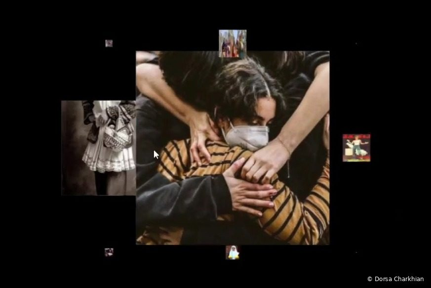
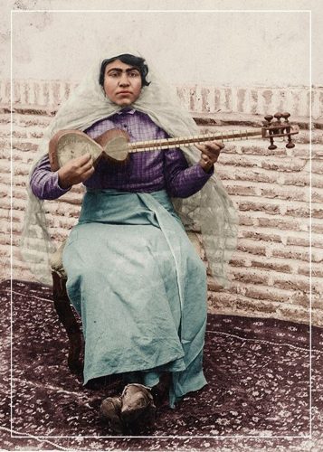
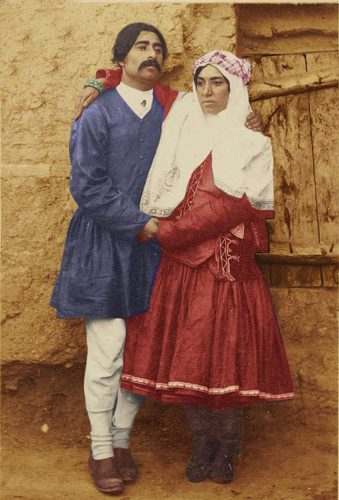
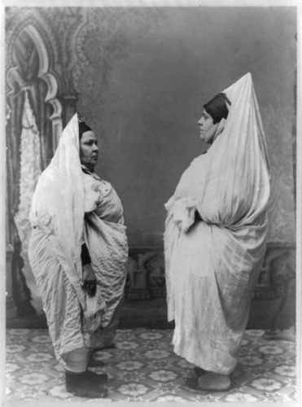
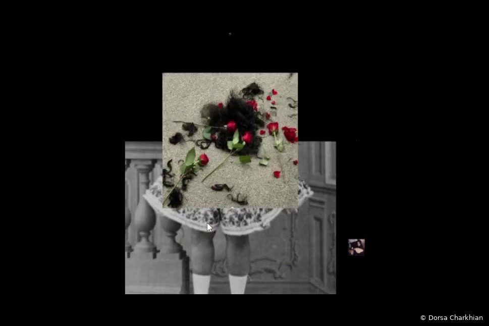
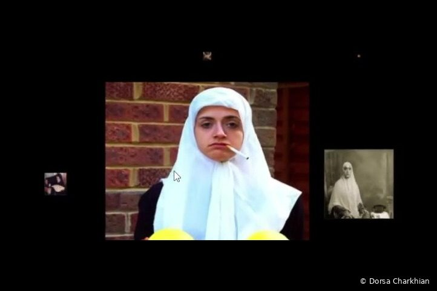
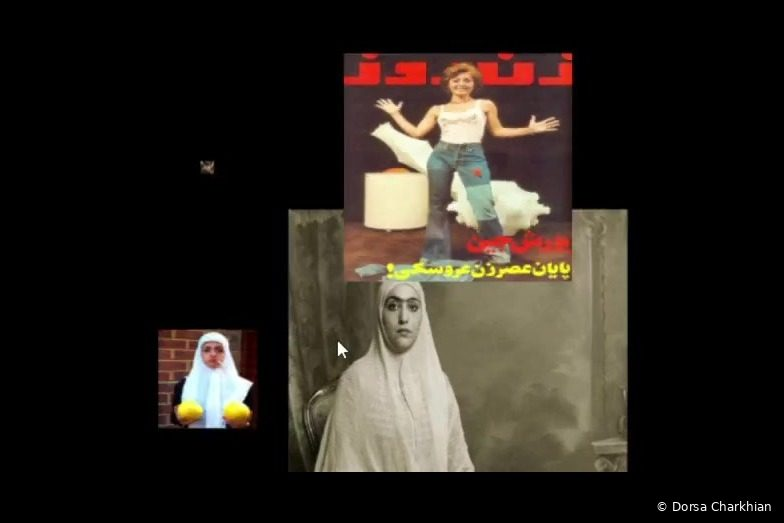
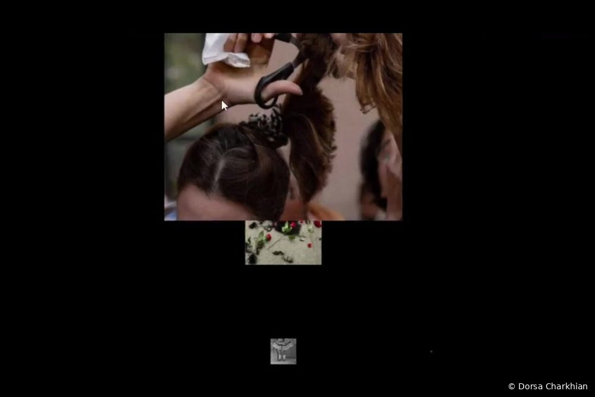

Design practice · Interactive sensing
INTERACT
An interactive display on the cultural heritage of Iranian women and the media’s impact on how women are seen.
Overview
INTERACT is an interactive display built in TouchDesigner. A century of images of Iranian women, from Qajar-era photographs to film and print media, moves across the screen at a speed set by the viewer’s head and body movement. The work highlights the cultural heritage of Iranian women and asks how media has shaped the way they are represented and seen, so that the archive responds to the person who looks at it.

Why this project
The project began from a gap I saw: the cultural heritage of Iranian women, and of women in many developing nations, is rarely represented in media on their own terms. I wanted to make that heritage visible and to explore, from a feminist perspective, how media influences women’s lives and self-image.
Research
I used competitive analysis, contextual inquiry, affinity and empathy mapping, task flows, journey maps and card sorting. The research showed strong interest in interactive, immersive experiences that tell cultural stories, and underlined the importance of feminist perspectives in media representation. The main pain point for the people I designed for was a lack of representation and understanding of their heritage in the media.



Reference, not the artist’s work: Qajar-era photographs of Iranian women from the source archive.
Design and interaction
In TouchDesigner, a webcam tracks the viewer’s movement and maps it to the speed and behavior of the images. Moving faster or slower changes how the archive unfolds, so each viewer experiences a different sequence. I designed micro-interactions and a consistent visual system so the piece stays legible in both open and enclosed spaces.




Video
What stayed with me
INTERACT taught me to treat the body as an interface and the archive as something that can respond. It connects to my written work on feminism, media and technology, and to my research on how people see themselves, or fail to, in the systems they use.
Related writing: Feminism, media and technology: Navigating the digital landscape, MAD (Media, Arts and Design) Anthology III, Drexel University, 2025.